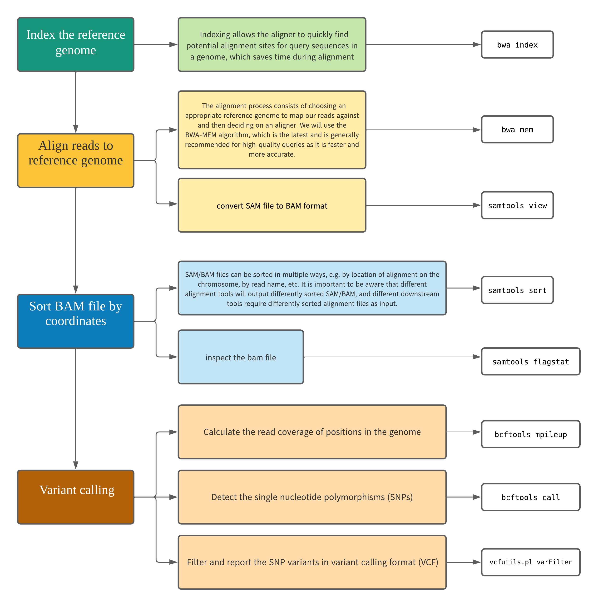

Variant Calling Workflow¶
This material is extracted from the Genomics Data Carpentry Lesson
Objectives and overall workflow
- Understand and perform the steps involved in variant calling.
- Describe the types of data formats encountered during variant calling.
- Use command line tools to perform variant calling.
{kind=link}

Assumptions
- You have already performed trimming and filtering of your reads and saved them in a directory called
trimmed_reads. - You have a reference genome saved in a directory called
ref_genome.
In this workshop we have already trimmed the reads and downloaded the reference genome for you. First, it is always good to verify where we are:
script
Output:/home/$USER
- You should see your own username in place of
$USER - FYI:
$USERis not an arbitrary string as it is a real environment variable. Runecho $USERand see what happens
Checking to make sure we have the directory and files for the workshop.
- You should see a directory named
/scripting_workshop
Alignment to a reference genome¶
First we need to create directories for the results that will be generated as part of this workflow. We can do this in a single line of code, because mkdir can accept multiple new directory names as input.
script
- Another quick and easy way to create multiple directories reside within the same parent directory is to wrap them with
{}(comma separated) e.g.,
Index the reference genome¶
Our first step is to index the reference genome for use by BWA. Indexing allows the aligner to quickly find potential alignment sites for query sequence in a genome, which saves time during alignment. Indexing the reference only has to be run once. The only reason you would want to create a new index is if you are working with a different reference genome or you are using a different tool for alignment.
Since we are working on the REANNZ HPC, we need to search and load the package before we start using it.
Software as modules
- Similar to other HPCs/SuperComputers, REANNZ Clusters provide software as modules (this is not the only way to deploy software as it can be done via other means such as conda, containers, etc.).
- A module is a self-contained description of a software package — it contains the settings required to run a software package and, usually, encodes required dependencies on other software packages.
- Refer to supplementary 1 - Accessing software via modules for more information.
script
Tip: All-In-One module load
We will be needing a few modules for this episode and the RNA-Seq Mapping episode. If you would like to load all of them at once, you could run the following command:
Indexing the genome
Output
[bwa_index] Pack FASTA... 0.03 sec
[bwa_index] Construct BWT for the packed sequence...
[bwa_index] 1.04 seconds elapse.
[bwa_index] Update BWT... 0.03 sec
[bwa_index] Pack forward-only FASTA... 0.02 sec
[bwa_index] Construct SA from BWT and Occ... 0.57 sec
[main] Version: 0.7.17-r1188
[main] CMD: bwa index ref_genome/ecoli_rel606.fasta
[main] Real time: 2.462 sec; CPU: 1.702 sec
Align reads to reference genome¶
The alignment process consists of choosing an appropriate reference genome to map our reads against and then deciding on an aligner. We will use the BWA-MEM algorithm, which is the latest and is generally recommended for high-quality queries as it is faster and more accurate. We are going to start by aligning the reads from just one of the samples in our dataset (SRR2584866).
script
bwa mem ref_genome/ecoli_rel606.fasta trimmed_reads/SRR2584866_1.trim.sub.fastq trimmed_reads/SRR2584866_2.trim.sub.fastq > results/sam/SRR2584866.aligned.sam
Output
[M::bwa_idx_load_from_disk] read 0 ALT contigs
[M::process] read 77446 sequences (10000033 bp)...
[M::process] read 77296 sequences (10000182 bp)...
[M::mem_pestat] # candidate unique pairs for (FF, FR, RF, RR): (48, 36728, 21, 61)
[M::mem_pestat] analyzing insert size distribution for orientation FF...
[M::mem_pestat] (25, 50, 75) percentile: (420, 660, 1774)
[M::mem_pestat] low and high boundaries for computing mean and std.dev: (1, 4482)
.....
[main] CMD: bwa mem ref_genome/ecoli_rel606.fasta trimmed_reads/SRR2584866_1.trim.sub.fastq trimmed_reads/SRR2584866_2.trim.sub.fastq
[main] Real time: 12.234 sec; CPU: 12.434 sec
SAM/BAM format¶
The SAM file is a tab-delimited text file that contains information for each individual read and it's alignment to the genome. While we do not have time to go into detail about the features of the SAM format, the paper by Heng Li et al. provides a lot more detail on the specification.
The compressed binary version of SAM is called a BAM file. We use this version to reduce size and to allow for indexing, which enables efficient random access of the data contained within the file.
We will convert the SAM file to BAM format using the samtools program with the view command and tell this command that the input is in SAM format (-S) and to output BAM format (-b):
script
Sort BAM file by coordinates¶
Next we sort the BAM file using the sort command from samtools. The -o flag tells the command where to write the output.
Terminal
Sorting
SAM/BAM files can be sorted in multiple ways, e.g. by location of alignment on the chromosome, by read name, etc. It is important to be aware that different alignment tools will output differently sorted SAM/BAM, and different downstream tools require differently sorted alignment files as input.
You can use samtools to learn more about the bam file.
Output
351169 + 0 in total (QC-passed reads + QC-failed reads)
350000 + 0 primary
0 + 0 secondary
1169 + 0 supplementary
0 + 0 duplicates
0 + 0 primary duplicates
351103 + 0 mapped (99.98% : N/A)
349934 + 0 primary mapped (99.98% : N/A)
350000 + 0 paired in sequencing
175000 + 0 read1
175000 + 0 read2
346688 + 0 properly paired (99.05% : N/A)
349876 + 0 with itself and mate mapped
58 + 0 singletons (0.02% : N/A)
0 + 0 with mate mapped to a different chr
0 + 0 with mate mapped to a different chr (mapQ>=5)
Variant calling¶
A variant call is a conclusion that there is a nucleotide difference relative to a given reference at a given position in an individual genome or transcriptome, often referred to as a Single Nucleotide Variant (SNV). The call is usually accompanied by an estimate of variant frequency and some measure of confidence. Similar to other steps in this workflow, there are a number of tools available for variant calling. In this workshop we will be using bcftools, but there are a few things we need to do before actually calling the variants.
Step 1: Calculate the read coverage of positions in the genome¶
Do the first pass on variant calling by counting read coverage with bcftools. We will use the command mpileup. The flag -O b tells bcftools to generate a bcf format output file, -o specifies where to write the output file, and -f specifies the path to the reference genome:
script
bcftools mpileup -O b -o results/bcf/SRR2584866_raw.bcf -f ref_genome/ecoli_rel606.fasta results/bam/SRR2584866.aligned.sorted.bam
Output
[mpileup] 1 samples in 1 input files [mpileup] maximum number of reads per input file set to -d 250
We have now generated a file with coverage information for every base.
Step 2: Detect the single nucleotide variants (SNVs)¶
Identify SNVs using bcftools call. We have to specify ploidy with the flag --ploidy, which is one for the haploid E. coli. -m allows for multiallelic and rare-variant calling, -v tells the program to output variant sites only (not every site in the genome), and -o specifies where to write the output file:
script
Step 3: Filter and report the SNV variants in variant calling format (VCF)¶
Filter the SNVs for the final output in VCF format, using vcfutils.pl:
Explore the VCF format:¶
- At this stage you can use various tools to analyse the vcf file.
- Exploring the vcf is beyond the scope of this workshop. Please refer to official documentation on VCF provided by Broad Institute
Now we are ready for the Next Lesson to put all these commands in a script.